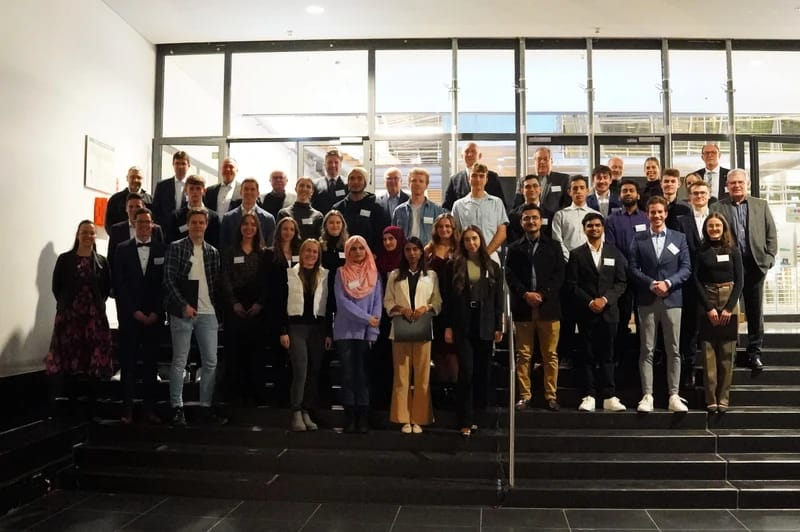
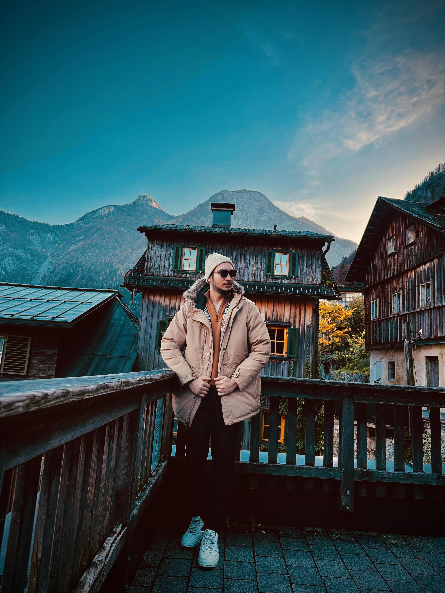
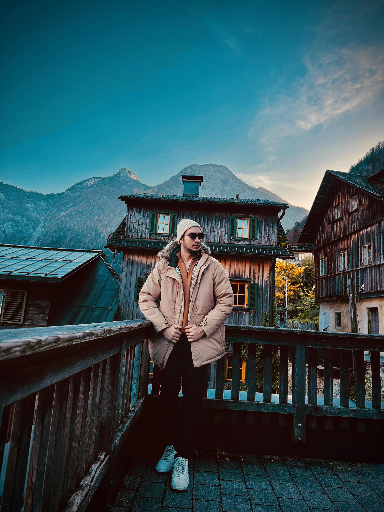

It was a thrilling moment when I received the news about my scholarship approval from the Technical University of Ingolstadt. This monthly scholarship of €300.00 will help me focus more on my studies and less on financial worries. It also serves as a constant reminder that hard work and determination pay off. In this post, I’ll walk you through my scholarship journey and how it’s influencing my academic goals.
 
